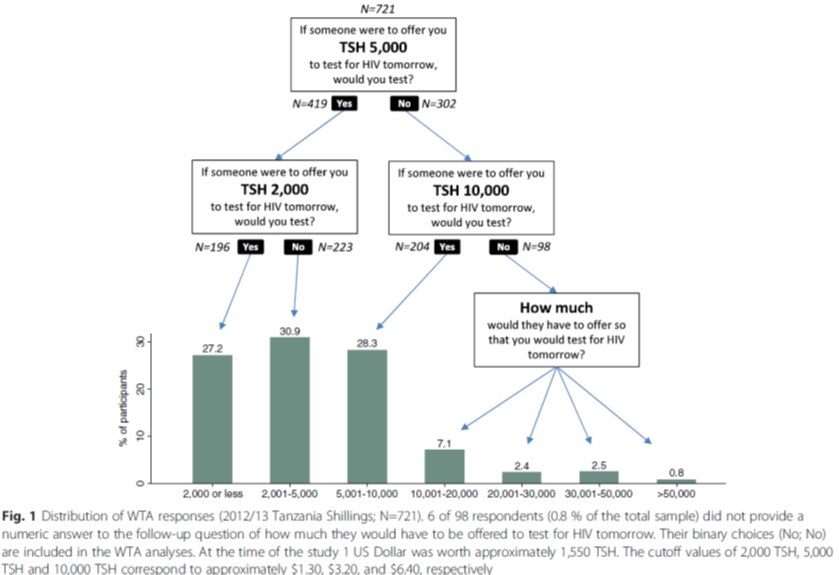
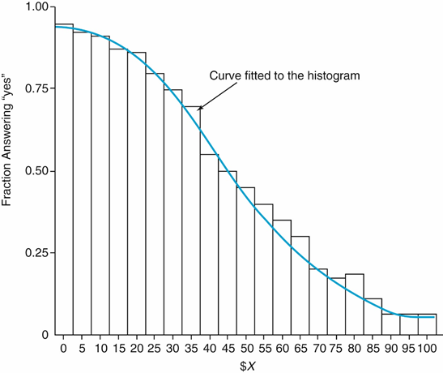
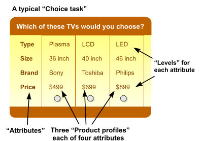
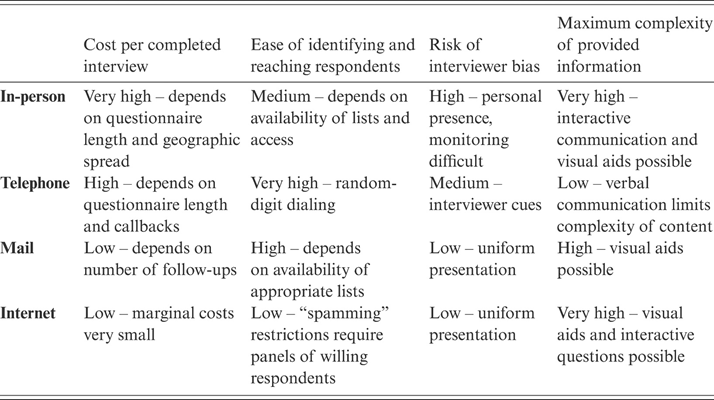
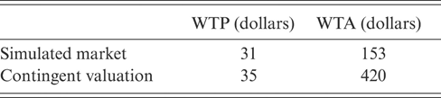
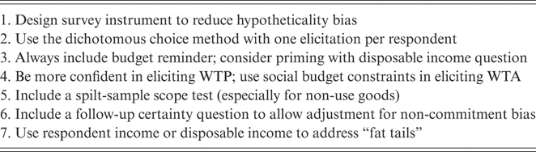

7 Shadow Prices 1: Stated Preferences
Today’s Goals:
- Review Problem Set 3
- Introduce contingent valuation (stated preference) methods
- Practice fielding a contingent valuation survey (and jump start some class projects)
- CBA of the Day: Early Childhood Education
Okay. We’ve been foreshadowing this topic a lot over the last six weeks. How do you monetize an impact when there are no market prices to consult? If Willingness To Pay (WTP) is the basis for all of our measures of social welfare, but we can’t observe what people are willing to pay, what do we do?
- How much do people value decreased pollution?
- How much do parents value their kids’ safety and education?
- How much does traffic congestion reduce people’s well-being?
Today we’ll introduce stated preference (SP) methods for estimating these shadow prices, which involve people stating how much they value a benefit or cost. Next week we’ll introduce revealed preference (RP) methods, which involve people taking actions that reveal how much they value a benefit or cost. These terminologies are relatively straightforward.
Stated preference methods are generally considered less rigorous than revealed preference methods, for reasons we will discuss (people lie, people are bad at estimating value, people suffer from systematic psychological biases, people never answer the phone anymore….methods that don’t depend on people are typically superior). But sometimes they are all you have, and an uncertain estimate may be better than no estimate at all.
7.1 Contingent Valuation
One type of stated preference method is contingent valuation (CVM). This method involves surveying people to elicit their WTP. They generally proceed as follows:
- Identify a sample from the population with standing
- Ask questions about their valuation over changes in the quantity of a good.
- Use those responses to estimate WTP (or WTA)
- Extrapolate results from sample to population (multiplication)
Let’s discuss three types of CVM surveys: open-ended, closed-ended iterative, and dichotomous choice.
7.1.1 Open-Ended
Just ask people how much they would be willing to pay.4
Exercise 1:
What are the advantages and disadvantages to this approach?
7.1.2 Closed-Ended Iterative Bidding
- Ask if respondent would pay $X for benefit.
- If yes, ask if they would pay \(\$(X + \varepsilon)\)
- If no, ask if they would pay \(\$(X-\varepsilon)\)
- Keep incrementing / decrementing until they switch their answer.
Exercise 2:
What are the advantages and disadvantages to this approach?
Here’s a neat example of this type of study from Derek Brown:

7.1.3 Dichotomous Choice / Referendum Method
Give each respondent a single, randomly drawn dollar value \(\$X\) and as if they would be willing to pay that amount. Then you can plot out a demand curve like this:

Exercise 3:
What are the advantages and disadvantages of this approach?
7.2 Discrete Choice Experiments (Conjoint Analysis)
Adapted from marketing research. Particularly useful if your policy is multidimensional, and you want to estimate how people value one attribute relative to another.
Example 1:

Example 2:

7.2.1 Survey Administration Methods

7.3 Critiques of Contingent Valuation
- Hypothetical Bias
- When faced with a hypothetical situation, people have difficulty imagining their WTP. There may be an upward bias, where people report that they are willing to pay more than they actually would if faced with the situation in real life.
- The opposite problem holds too. When people have very small WTP, they may report $0 instead of a small value.
- Difference between WTP and WTA
- Because of psychological biases like loss aversion and the endowment effect, people tend to report lower WTP for benefits they don’t have and higher WTA for benefits they do have.5

- Order/Anchor Effects
- Responses often depend on the order in which questions are asked. (If you’re first asked about your valuation for saving whales, your valuation for saving seals might be lower than if the questions were asked the other way around.)
- Best practice is to ask each respondent only one valuation question.
- Who are your respondents? Are they representative of the people who will actually benefit from the program?
- Non-response bias. Common problem for all survey research these days.
- Scope Problems
- Survey respondents often report very similar values for quantitatively different outcomes. For example, people will often report the same WTP for saving 2,000 birds as they would for saving 200,000 birds.
- People have a hard time conceptualizing big numbers! Always a good idea to provide context when people may be unfamiliar with your area of interest. (How many migratory seabirds are there currently?)
- Also good practice to conduct a scope test. Vary your numbers and see what happens to valuations.
- Non-Commitment Bias
- If you just ask for WTP, then you’re not capturing differences in certainty. One respondent may be very sure that they would pay $3. Another respondent may just blindly guess $3. Good practice is to ask a follow up question about their level of certainty, and see how valuation varies based on certainty.
7.4 Boardman’s Recommendations

7.5 CBA of the Day
Early Childhood Education for Low-Income Students (Hoagland, 2019)
7.6 In-Class Exercise
- Consider the CBA you’d like to conduct for your class project. Are there any benefits (or costs) for which it will be difficult to estimate WTP from market prices?
- Raise your hand. Students without such a problem will help you construct a contingent valuation survey to administer to the rest of the class.
- Which survey method will you use? What questions will you ask? Write them down.
- Once Step 3 is complete, each group will introduce their problem and administer their survey to the remainder of the class.